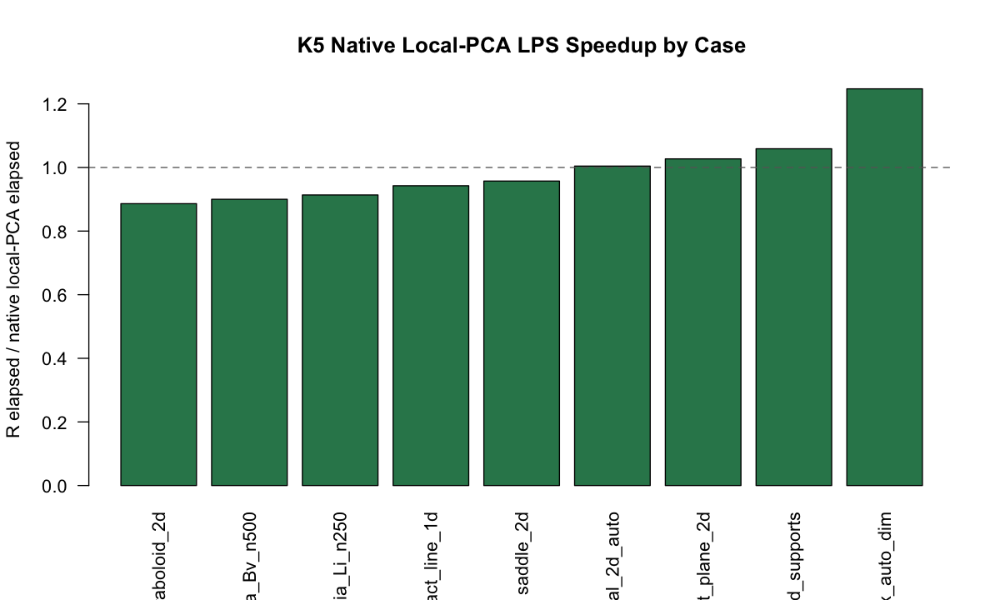

backend = "cpp.local.pca" against the R reference path.
No package defaults are changed.Cases: 9; selected-output parity pass: 9; strict candidate-CV warnings: 1.
Max absolute CV difference: 0.0013192; max fitted-value difference: 3.7748e-15; max prediction difference: 3.5527e-15.
Median speedup R/native: 0.95726.

| case.id | status | error | n | p | n.candidates | chart.dim.requested | r.elapsed.sec | cpp.elapsed.sec | speedup.r.over.cpp | max.abs.cv.diff | max.rel.cv.diff | max.abs.fitted.diff | max.abs.predict.diff | selected.same | selected.r | selected.cpp | parity.pass | strict.cv.pass | output.parity.pass |
|---|---|---|---|---|---|---|---|---|---|---|---|---|---|---|---|---|---|---|---|
| exact_line_1d | ok | 61 | 3 | 18 | 1 | 0.082 | 0.087 | 0.9425287 | 1.700029e-16 | 1.050383e-08 | 8.881784e-16 | 6.661338e-16 | TRUE | support.size=8; degree=2; kernel=gaussian; chart.dim=1; cv.rmse.observed=3.50846517990294e-16 | support.size=8; degree=2; kernel=gaussian; chart.dim=1; cv.rmse.observed=2.23035173557349e-16 | TRUE | TRUE | TRUE | |
| exact_plane_2d | ok | 49 | 3 | 12 | 2 | 0.038 | 0.037 | 1.0270270 | 1.319239e-03 | 7.754471e-03 | 1.998401e-15 | 1.332268e-15 | TRUE | support.size=10; degree=2; kernel=gaussian; chart.dim=2; cv.rmse.observed=3.80842103723904e-16 | support.size=10; degree=2; kernel=gaussian; chart.dim=2; cv.rmse.observed=2.83865836120796e-16 | FALSE | FALSE | TRUE | |
| duplicated_supports | ok | 24 | 3 | 12 | 2 | 0.018 | 0.017 | 1.0588235 | 6.383782e-16 | 5.171127e-15 | 3.552714e-15 | 3.552714e-15 | TRUE | support.size=12; degree=1; kernel=gaussian; chart.dim=2; cv.rmse.observed=0.103250760919703 | support.size=12; degree=1; kernel=gaussian; chart.dim=2; cv.rmse.observed=0.103250760919703 | TRUE | TRUE | TRUE | |
| helix_auto_dim | ok | 120 | 3 | 18 | auto | 0.338 | 0.271 | 1.2472325 | 1.110223e-16 | 8.516403e-15 | 1.332268e-15 | 4.852889e-16 | TRUE | support.size=12; degree=2; kernel=tricube; chart.dim=2; cv.rmse.observed=0.00336091859564005 | support.size=12; degree=2; kernel=tricube; chart.dim=2; cv.rmse.observed=0.00336091859564002 | TRUE | TRUE | TRUE | |
| paraboloid_2d | ok | 120 | 3 | 12 | 2 | 0.109 | 0.123 | 0.8861789 | 7.632783e-17 | 2.586822e-15 | 4.996004e-16 | 2.220446e-16 | TRUE | support.size=15; degree=2; kernel=tricube; chart.dim=2; cv.rmse.observed=0.0228004066661615 | support.size=15; degree=2; kernel=tricube; chart.dim=2; cv.rmse.observed=0.0228004066661615 | TRUE | TRUE | TRUE | |
| saddle_2d | ok | 120 | 3 | 12 | 2 | 0.112 | 0.117 | 0.9572650 | 1.110223e-16 | 4.779660e-16 | 2.220446e-15 | 6.661338e-16 | TRUE | support.size=15; degree=2; kernel=tricube; chart.dim=2; cv.rmse.observed=0.101860065952405 | support.size=15; degree=2; kernel=tricube; chart.dim=2; cv.rmse.observed=0.101860065952405 | TRUE | TRUE | TRUE | |
| highdim_diagonal_2d_auto | ok | 140 | 40 | 12 | auto | 1.852 | 1.844 | 1.0043384 | 3.469447e-17 | 1.483310e-15 | 7.771561e-16 | 1.110223e-16 | TRUE | support.size=15; degree=2; kernel=tricube; chart.dim=2; cv.rmse.observed=0.0123566588774692 | support.size=15; degree=2; kernel=tricube; chart.dim=2; cv.rmse.observed=0.0123566588774691 | TRUE | TRUE | TRUE | |
| valencia_Li_n250 | ok | 250 | 3 | 8 | 2 | 0.148 | 0.162 | 0.9135802 | 5.287770e-12 | 2.262719e-12 | 1.554312e-15 | 6.661338e-16 | TRUE | support.size=25; degree=1; kernel=gaussian; chart.dim=2; cv.rmse.observed=0.070384555974283 | support.size=25; degree=1; kernel=gaussian; chart.dim=2; cv.rmse.observed=0.070384555974283 | TRUE | TRUE | TRUE | |
| valencia_Bv_n500 | ok | 500 | 3 | 8 | 2 | 0.306 | 0.340 | 0.9000000 | 1.605804e-11 | 3.932822e-11 | 3.774758e-15 | 2.220446e-16 | TRUE | support.size=25; degree=1; kernel=tricube; chart.dim=2; cv.rmse.observed=0.0467036104431961 | support.size=25; degree=1; kernel=tricube; chart.dim=2; cv.rmse.observed=0.0467036104431961 | TRUE | TRUE | TRUE |
The strict absolute candidate-CV tolerance is 1e-07.
The table below archives every candidate whose absolute R/native CV RMSE
difference exceeds that tolerance, so warning cases can be audited without
regenerating the fits.
| case.id | support.size | degree | kernel | chart.dim | r.cv.rmse | cpp.cv.rmse | abs.diff | rel.diff |
|---|---|---|---|---|---|---|---|---|
| exact_plane_2d | 10 | 1 | gaussian | 2 | 0.1701263 | 0.1714455 | 0.001319239 | 0.007754471 |
| exact_plane_2d | 14 | 1 | gaussian | 2 | 0.2300301 | 0.2289378 | 0.001092320 | 0.004748597 |
CSV: /Users/pgajer/current_projects/geosmooth/split_handoffs/k5_lps_native_validation_2026-06-04/tables/k5_lps_native_validation_results.csv
Candidate-diff CSV: /Users/pgajer/current_projects/geosmooth/split_handoffs/k5_lps_native_validation_2026-06-04/tables/k5_lps_native_validation_candidate_diffs.csv
Warning-detail CSV: /Users/pgajer/current_projects/geosmooth/split_handoffs/k5_lps_native_validation_2026-06-04/tables/k5_lps_native_validation_warning_candidate_diffs.csv